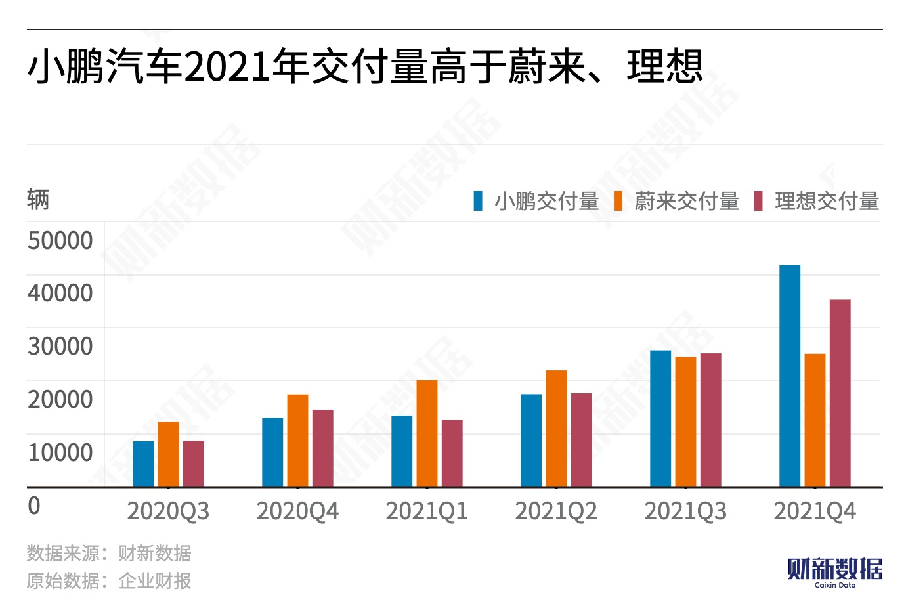
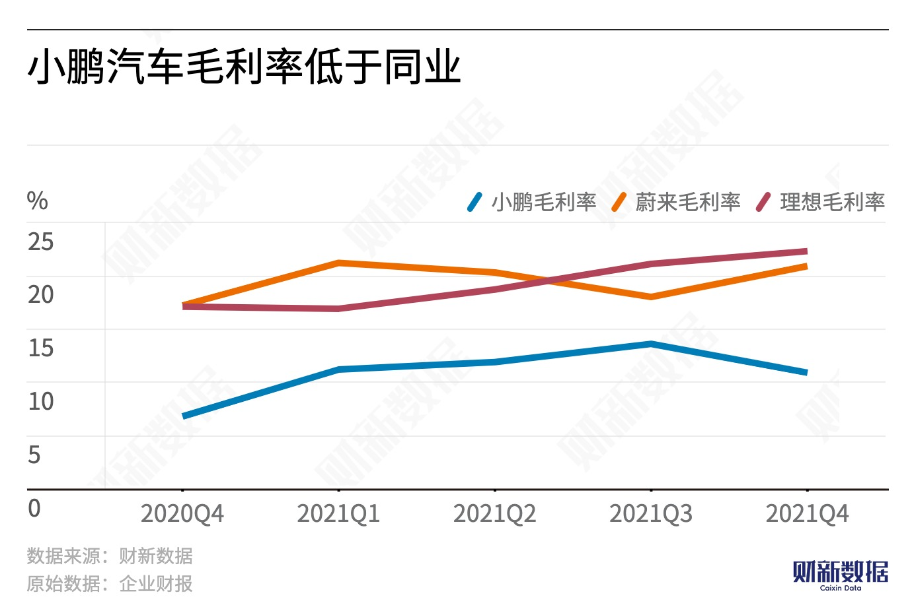

In 2021, the automotive industry's supply chain faced severe challenges. Upstream raw material costs surged, and new automaker such as Xpeng had to deal with shortages of chips and tight battery supplies, as well as component shutdowns or logistics difficulties caused by sporadic outbreaks of the pandemic.
Xpeng, NIO, and Li Auto are in an acceleration period of improving profitability, but their large R&D investments have led to strategic losses in the short term. However, their continually rising per-vehicle profit margins may indicate their ability to approach the breakeven point in the future.
Xiaopeng Motors takes first place in delivery volume as NIO's rival, Ideal, turns a profit
In terms of delivery volume, Xiaopeng Motors delivered 98,200 vehicles in 2021, surpassing NIO's 91,400 vehicles and Li Auto's 90,500 vehicles. It is worth noting that NIO's delivery volume is slightly behind, and according to China Passenger Car Association data, Nezha Auto, a second-tier competitor, has sold over 18,000 vehicles in the first two months of 2022, surpassing NIO's 15,800 vehicles. Meanwhile, Li Auto has turned a profit.
As delivery volume rises, the three automakers have all shown an upward trend in revenue growth and profit improvement. Among them, NIO ranked first with a full-year revenue of CYN 36.14 billion, up 122% year-on-year, and a full-year net loss narrowed by 24.3%.
In terms of gross margin performance, Xpeng's new vehicle gross margin is relatively low compared with its peers, at 11.5%, but the momentum of its new vehicle gross margin improvement is good, up 8 percentage points from the same period in 2020. According to the financial report, the improvement in gross margin is mainly due to the expansion of product portfolio, the reduction of material costs, and the revenue recognition of XPILOT software sales. Li Autos' new vehicle gross profit margin is the highest, at 20.6%, while NIO's is 20.1%.

Li Auto had a stellar performance in Q4 2021, turning a profit once again. The automaker delivered 35,000 vehicles during the quarter, with a vehicle gross profit margin exceeding market expectations by 1.2%, resulting in a net profit of CNY 295.5 million. According to a Citigroup research, Li Auto's higher-than-expected new vehicle gross margin in the quarter reflects improved operational efficiency and cost controls.
The shortage of semiconductor chips and rising prices of batteries
Despite the chip shortage and rising raw material costs, both Xpeng and NIO remain optimistic. "It is a temporary issue and also a better way for Xpeng to hone its skills," said He Xiaopeng, founder of Xpeng Auto. "Our medium-term goal is to raise the company's overall gross margin to over 25%.
CITIC Securities research report previously stated that these three automakers are in an acceleration period of improving profitability. Although large R&D investment still causes strategic losses in the short term, their continuously climbing single-car gross profit has shown their ability to approach the breakeven point in the future.